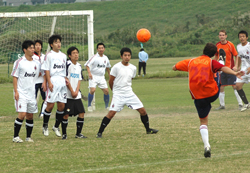

|
Misato, Sunday 27th September
It was the morning after the night before; players crawled out from their respective homes/rocks/love hotels to converge, once again, on an unsuspecting Misato. The low hanging cloud like a pool of stale smoke over a late-night poker game and a breeze from the north made for ideal conditions to play the beautiful game.
As 11.30am struck, the teams lined up ready to begin the contest. Yabe F.C. wearing white faced King George F.C. in orange. Both teams looked confident, although King George were without the drunken Adam ‘Teenwolf’ McCann and the influential Tomoki ‘Terminator’ Shiota who was called away to the United States of A at the last minute. Unperturbed, King George plugged the gaps knowing that with young Welshman Ben ‘Best Left Foot in North Wales’ Steinson in red hot form there was always a chance.
George won the toss, Yabe kicked-off. Game on. Yabe immediately showed their attacking intent by charging down the right winning themselves an early corner. It came to nothing. In the early proceedings Yabe probed the King George back line looking for an opening, but the back four were too tight… impenetrable. As Yabe failed to make their early dominance pay the tide turned.
With the George midfield stepping it up a gear defence soon became attack; wave after wave of orange attack coming to nothing, foiled by a goalkeeper who was in particularly fine fettle. A clear-cut chance from an in-swinging corner was blazed over by the ever reliable John ‘I need a woman’ McGowan as he rose at the back post like a majestic salmon. Was it destined to be one those days? Not if the George’s all-action captain had anything to do with it.
As Yabe cleared their lines for what seemed like the hundredth time the ball fell kindly to Captain James ‘Rotund’ Bates about 40 yards out. Taking a touch he looked up to see the seemingly invincible keeper off his line; with visions of his boyhood hero David ‘Golden Balls’ Beckham (probably naked visions) racing through his mind Bates stuck the ball with the finesse of Tiger Woods escaping a particularly tricky bunker lobbing the hapless keeper. 1-0 to King George F.C.
Yabe were rattled. The second goal didn’t take long to come. The irresistible King George were producing a display to behold; defence solid, midfield battling, forwards inventive. Colin ‘Two Weddings’ Cameron soon capitalized on some sloppy defending after wriggling free of his marker like an eel in a salsa class and slotting home. 2-0 to the George.
Half time.
The second-half started with Yabe wanting to give a better account of themselves and King George wanting to put the gloss on the game which the first-half performance certainly merited. The George continued where they had left off in the first-half. This time it was the turn of Dan ‘Ball Killer’ Bard to spurn an opportunity from mere yards. Chance after chance went begging. Yabe had no answer as King George with their wily use of substitutes spread across the pitch like an orange rash.
Captain Bates had a golden opportunity to grab his second goal of the game after being left unmarked as a corner came in, but ruefully headed wide leading to chants of ‘50p head!’ from the sidelines. Jaz ‘Me Fumble?’ Guram was becoming increasingly bored in goal for the George with not even a whiff of a chance for him to throw the ball into his own net.
Sean ‘Battling’ Carroll was winning everything in the midfield, while Fernando ‘Passion’ Bermudez and Alex ‘Pace’ Condi remained ever dangerous outlets for attack; the third goal surely wasn’t far away… The ball fell to the red hot Steinson who sent ball crashing toward the bottom corner with venom of an irritated asp, only to be denied by the finest save since Sylvester Stallone against the German all-star team in ‘Escape to Victory’.
The dashing Steinson, a constant thorn in the side of the Yabe defence, had the bit between his teeth. He was sent through by a tremendous ball from captain fantastic (a little wide though), turning on a six-pence Steinson whipped in a glorious cross to the back post that eluded the ever impressive goalkeeper but not Condi who coolly slotted home. Alex took the plaudits, but it was all about the cross, an impressive end to an impressive team performance by the boys in orange.
3-0 George, in truth it could have been many more, but that’s football. ’Depth’ was surely the buzzword of the day. If King George F.C. can replicate that kind of performance in every game then surely a season of moderate success is in the offing.
Report by Ben ‘Best Left Foot in North Wales’ Steinson
|

 |